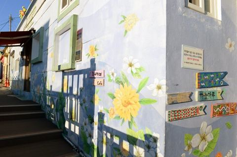
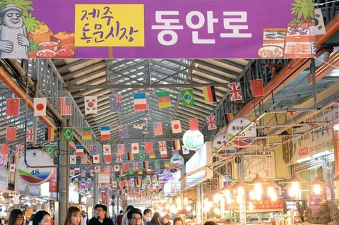
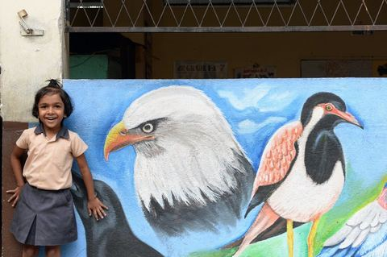
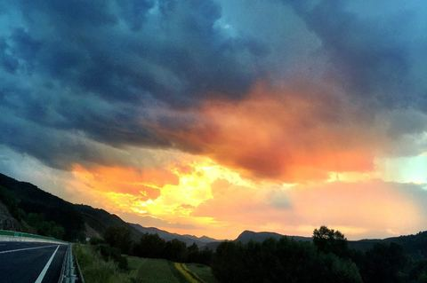
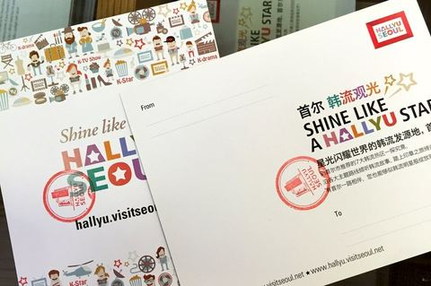
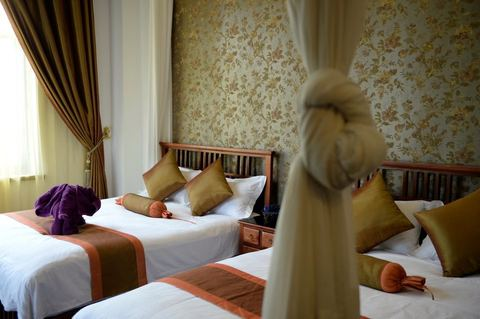
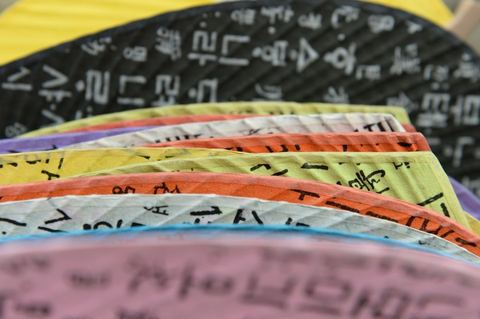
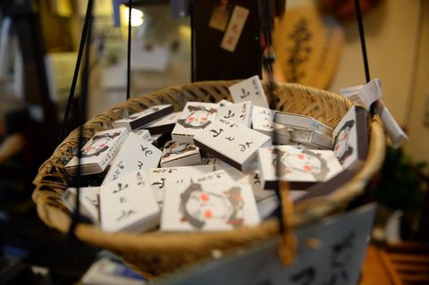
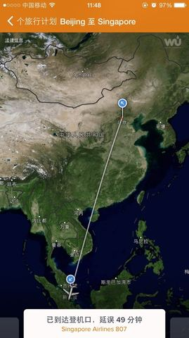

从釜山到DMZ铁路旅行
69 张照片 →
济州岛桔子又熟了
65 张照片 →
微笑的斯里兰卡
“斯里兰卡”在僧伽罗语中意为“乐土”或“光明富庶的土地”，有“宝石王国”、“印度洋上的明珠”的美称……十一节前与南亚大自然的郝总相约，节后在他带领下一起游斯里兰卡，他说这将是一次每天收获微笑的旅行。…
98 张照片 →你有多久没有看过那片海
你有多久没有看过那片海 你到现在对自己究竟多明白 总是不服输 永远要比别人快 在你前方是否有你要的未来 想到我们的过去 都让人感慨 …… 一提起塞班岛，我就会想起阿杜这首《Andy》，感觉很多歌都跟这里有关，比…
73 张照片 →
乌兰布统天下最美
出差因为强台风延期了，经常感觉该出门的时间是命中注定的，就算未成行待在家也不自在……前年错过了元上都的金莲花，听说乌兰布统也有，心里一直痒痒，赤峰的朋友说立秋之后草马上就会黄了，周六吃过午饭，说走就走……没有做任何准备，旅行中的种种不确定才…
32 张照片 →
没有你首尔很想念
去过99次韩国的我，对第100次的韩国之行仍然充满好奇，因为每次都有不同的收获意外的惊喜。…
35 张照片 →
盘锦大洼不仅只有红海滩
两年前就发现了一个特别的地方-盘锦红海滩，每年9-10月去红海滩看红草、吃螃蟹感觉是个不错的旅行，总想去但是一到9-10月就因为各种事情错过了。终于有了一个特别的理由，可以去盘锦了，中国旅业创始人财智高峰论坛安排在了盘锦，又是一个同业间交流…
29 张照片 →
就是现在来首尔吧！
为重振受中东呼吸综合征(MERS)疫情影响而陷入低迷的韩国旅游市场，韩亚航空公司组织了由中国150名主要旅行社总经理、40名媒体人、10名权威博主组成的考察团今天出发！我也身在其中，我愿意率先一探究竟，传递一个真实的韩国信息！…
66 张照片 →
量子狂欢夜：在海洋量子号上的几个小时
受邀参加皇家加勒比海洋量子号的首航仪式，活动名为量子狂欢夜，可以说是中国邮轮界的一个大事，全国的代理商、媒体、合作伙伴以及相关的政府官员齐聚上海，迫不及待地要一睹海洋量子号的真面目………
30 张照片 →
京都的水水花香灯茶饭
94 张照片 →
蓝宝石公主号+文艺的新加坡马来西亚
一个特别的旅行，特别之处在于出行选在了春节前最忙的时间，其实早就可以说走就走，但总有各种放不下，这次旅行总算是一个突破…… 今早看到一段文字：每年要去一个陌生的地方。这是我对自己的一个要求，也算是一个规划。这个习惯似乎从小就有，一直持续到…
109 张照片 →坚强的仙儿不是土豪也快乐
1985-2015学通社30年，没有人知道你会变得多么好，感谢学通社的培养，自信才会有理想………
333 张照片 →